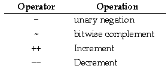
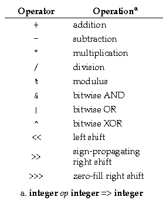

. [] () ++ -- ! ~ instanceof * / % + - << >> >>> < > <= >= == != & ^ | && || ?: = op= ,
The unary integer operators are:

The ++ operator is used to express incrementing directly. Incrementing can also be expressed indirectly using addition and assignment. ++lvalue means lvalue+=1. ++lvalue also means lvalue=lvalue+1 (as long as lvalue has no side effects). The -- operator is used to express decrementing. The ++ and -- operators can be used as both prefix and postfix operators.
The binary integer operators are:

Integer division rounds toward zero. Division and modulus obey the identity (a/b)*b + (a%b) == a. %0 throws an ArithmeticException.
The only exception for integer arithmetic is caused by a divide by zero, which throws the ArithmeticException. An underflow generates zero. An overflow leads to wrap-around, i.e., adding 1 to the maximum integer wraps around to the minimum integer.
An op= assignment operator corresponds to each of the binary operators in the above table.
The integer relational operators <, >, <=, >=, ==, and != produce boolean results.
The operators abs(x), max(x,y), and min(x,y) work for integers as they do for all numbers.
a % b
is the same as:
a - ((int)(a / b) * b)
This means that a%b is the floating point equivalent of the remainder after division.The operators abs(x), max(x,y), and min(x,y) work for floats as they do for all numbers.
Floating point expressions involving only single-precision operands are evaluated using single-precision operations and produce single-precision results. Floating point expressions that involve at least one double-precision operand are evaluated using double-precision operations and produce double-precision results.
The language has no arithmetic exceptions for floating point arithmetic. Following the IEEE 754 floating point specification, the distinguished values Inf and NaN are used instead. Overflow generates Inf. Underflow generates 0. Divide by zero generates Inf.
The usual relational operators are also available and produce boolean results: >, <, >=, <=, ==, !=. Because of the properties of NaN, floating point values are not fully ordered, so care must be taken in comparison. For instance, if a<b is not true, it does not follow that a>=b. Likewise, a!=b does not imply that a>b || a<b. In fact, there may no ordering at all.
Floating point arithmetic and data formats are defined by IEEE 754, "Standard for Floating Point Arithmetic." See "Appendix: Floating Point" on page 37 for details on the language's floating point implementation.
<expression>[<expression>]
gets the value of an element of an array. Legal ranges for the expression are from 0 to the length of the array minus 1. The range is checked only at runtime.
// Examples of the + operator used with strings
float a = 1.0;
print("The value of a is " + a + "\n");
String s = "a = " + a;
The += operator works on Strings. Note, that the left hand side (s1 in the following example) is evaluated only once.
s1 += a; //s1 = s1 + a; a is converted to String if necessary
if (thermostat instanceof MeasuringDevice) {
MeasuringDevice dev = (MeasuringDevice)thermostat;
...
}
determines whether thermostat is a MeasuringDevice object (an instance of MeasuringDevice or one of its subclasses).
The Java Language Specification
Generated with CERN WebMaker